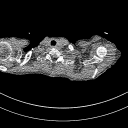
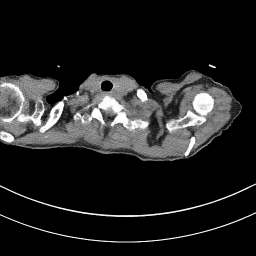
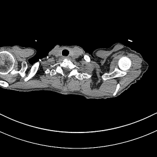
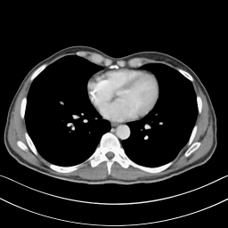
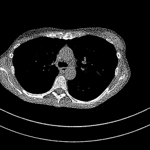
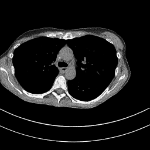

The Team
Ömer Nezih Gerek
Supervisor · Eskişehir Technical University

Serdar Bal
Researcher · Eskişehir Technical University
Ahmet Furkan Güven
Researcher · Eskişehir Technical University

Derya Umut Kulalı
Researcher · Eskişehir Technical University
Differentiable Radon Bridge & Cross-Attention Fusion
Radiation vs. Image Quality
Reducing radiation dose in CT scans saves patients from harmful exposure — but it introduces quantum noise, streak artifacts, and granular textures that can obscure critical anatomical details. The diagnostic dilemma: safety vs. clarity.
Physics-Informed Dual-Domain Learning
Connects sinogram and image domains through differentiable forward/inverse Radon operators, enabling end-to-end gradient flow across domains.
Adaptively controls cross-domain feature injection using attention gating — suppressing noisy sinogram artifacts while preserving useful structural information.
Parallel sinogram U-Net and image U-Net process both projection and spatial domains simultaneously, bridged by physics operators.
100 Epochs of Convergence
Every Component Matters
n = 2,417 slices
n = 1,045 slices
n = 3,462 slices
Key Finding: The gate mechanism is critical. Without it, raw sinogram features degrade image quality by –1.37 dB in lung anatomy. The adaptive fusion gate recovers and surpasses baseline, proving that how you fuse matters more than whether you fuse.
See the Difference
Chest Region (C Bölgesi)

Low-Dose Input

Enhanced Output

Full-Dose Ground Truth
Lung Region (L Bölgesi)
Low-Dose Input

Enhanced Output
Full-Dose Ground Truth
Additional Chest Sample

Low-Dose Input

Enhanced Output
Full-Dose Ground Truth
| Metric | Case 1 | Case 2 | Case 3 | Case 4 | Mean ± Std |
|---|---|---|---|---|---|
| PSNRimage (dB) | 25.53 | 24.30 | 24.05 | 32.06 | 26.48 ± 3.77 |
| PSNRsinogram (dB) | 28.90 | 27.63 | 27.83 | 35.43 | 29.95 ± 3.70 |
| SSIMimage | 0.8529 | 0.8404 | 0.8379 | 0.8974 | 0.857 ± 0.028 |
| SSIMsinogram | 0.9759 | 0.9701 | 0.9710 | 0.9904 | 0.977 ± 0.009 |
*Note: Literature values use LDCT→NDCT benchmark on Mayo/AAPM dataset. Our model trains on a different data configuration; direct comparison is approximate. Lung-split PSNR (33.88 dB) is competitive with state-of-the-art.
Supervisor · Eskişehir Technical University
Researcher · Eskişehir Technical University
Researcher · Eskişehir Technical University
Researcher · Eskişehir Technical University
Get in touch with the research team
Principal Investigator · Eskişehir Technical University